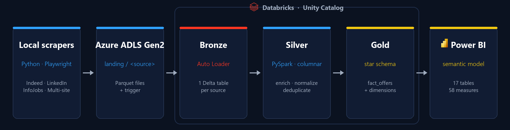
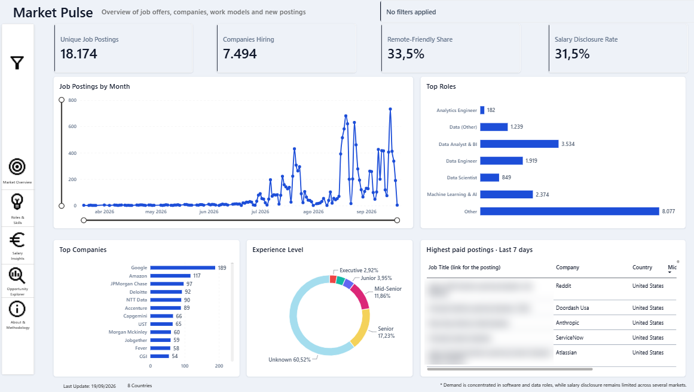
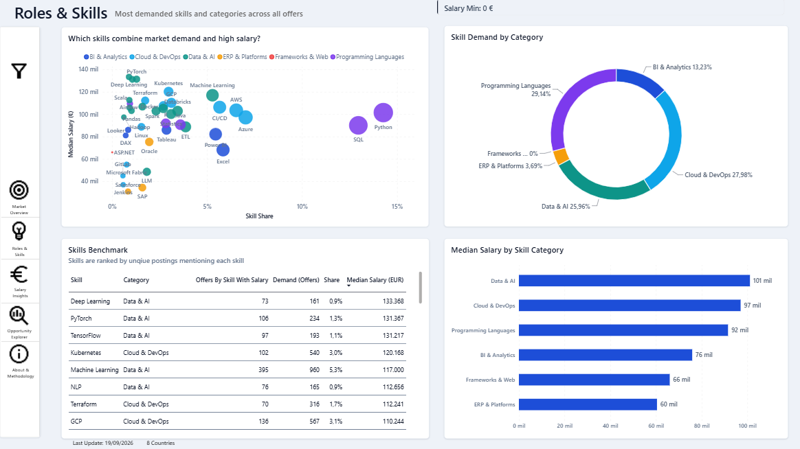
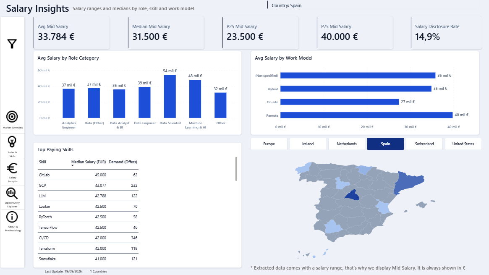
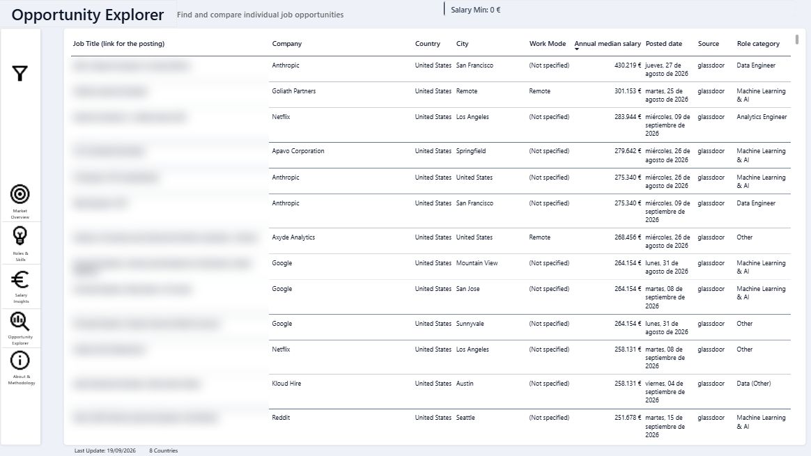
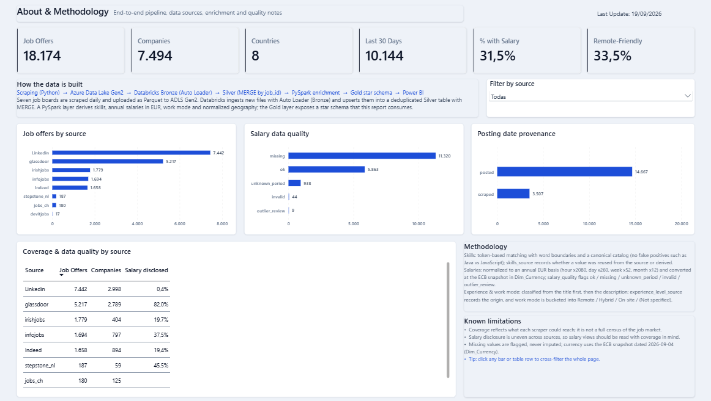
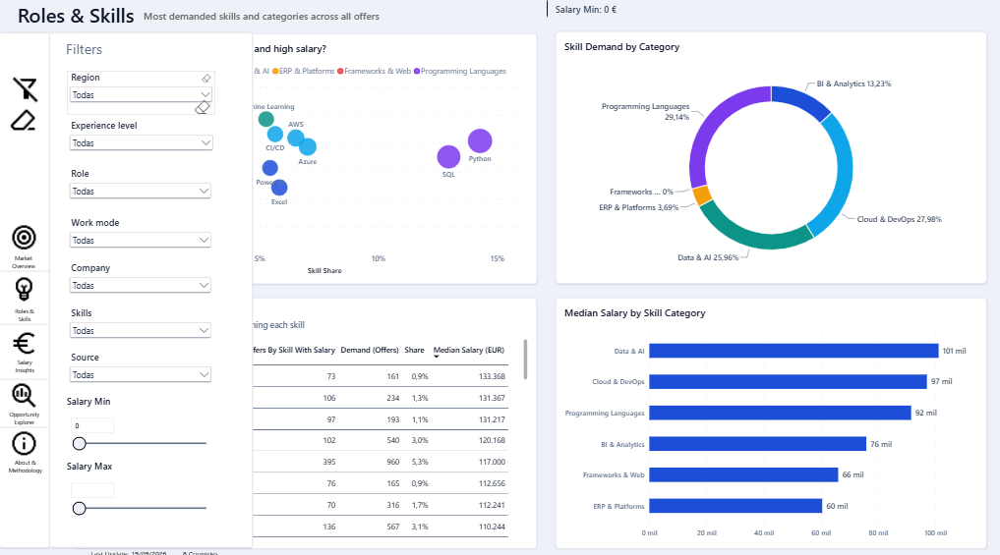
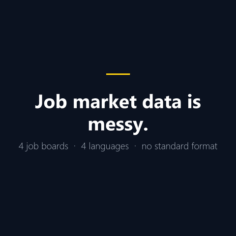

Qué encontrarás · What you'll find
- Market Pulse KPIs del informe, tendencia de los últimos 6 meses, top roles y empresas y reparto por experiencia. Report KPIs, 6-month trend, top roles and companies and experience split.
- Roles & Skills Demanda y cuota por skill, salario mediano, burbuja demanda vs. salario, donut por categoría y tabla benchmark. Skill demand and share, median salary, demand-vs-salary bubble, category donut and benchmark table.
- Salary Insights Media, mediana, P25 y P75, medias por rol y modalidad, skills mejor pagadas y mapa con selector de país. Average, median, P25 and P75, averages by role and work mode, top paying skills and a country-selector map.
- Opportunity Explorer Buscador de ofertas individuales con empresa, ubicación, modalidad, salario, fecha, fuente y enlace a la oferta original. Searchable individual postings with company, location, work mode, salary, date, source and a link to the original offer.
- Metodología · Methodology Fuentes, traza del pipeline, normalización salarial, frescura, limitaciones conocidas y aviso legal. Sources, pipeline trace, salary normalisation, freshness, known limitations and legal notice.
Cómo funciona · How it works
- Scrapers (Python)
- Databricks · Bronze/Silver/Gold
- Export Parquet + meta.json (ADLS Gen2)
- GitHub Actions · 01:00 UTC
- GitHub Pages
- DuckDB-WASM + ECharts
Los scrapers recogen ofertas de portales públicos; Databricks las procesa en la arquitectura Medallion (Bronze, Silver y Gold); una tarea final del job exporta las tablas Gold a Parquet más meta.json en Azure ADLS Gen2; GitHub Actions descarga el export cada día y publica el sitio; y tu navegador ejecuta SQL con DuckDB-WASM y dibuja los gráficos con ECharts. La fecha de datos visible en el dashboard sale de ese meta.json.
Scrapers collect postings from public job portals; Databricks processes them through the Medallion architecture (Bronze, Silver and Gold); a final job task exports the Gold tables to Parquet plus meta.json in Azure ADLS Gen2; GitHub Actions downloads the export every day and publishes the site; your browser then runs SQL with DuckDB-WASM and draws the charts with ECharts. The data date shown in the dashboard comes from that meta.json.

Evidencia Power BI · Power BI evidence
El canal público para explorar los datos es este dashboard web. El proyecto Job_Offers_Dashboard.pbip y las capturas del informe se mantienen como evidencia de la capa BI (modelo semántico, medidas DAX y 5 páginas).
The public channel for exploring the data is this web dashboard. The Job_Offers_Dashboard.pbip project and the report captures are kept as evidence of the BI layer (semantic model, DAX measures and 5 pages).
-

Market Pulse — KPIs y tendencia · KPIs and trend -

Roles & Skills — demanda vs. salario · demand vs. salary -

Salary Insights — salarios y mapa · salaries and map -

Opportunity Explorer — ofertas individuales · individual postings -

About & Methodology — metodología · methodology -

Filtros · Filters — panel global · global pane -

Demo (GIF) — recorrido del proyecto · project walkthrough


Proyecto Power BI: Job_Offers_Dashboard.pbip en GitHub · capturas originales en images/ · GIF en media/.
Power BI project: Job_Offers_Dashboard.pbip on GitHub · original captures in images/ · GIF in media/.